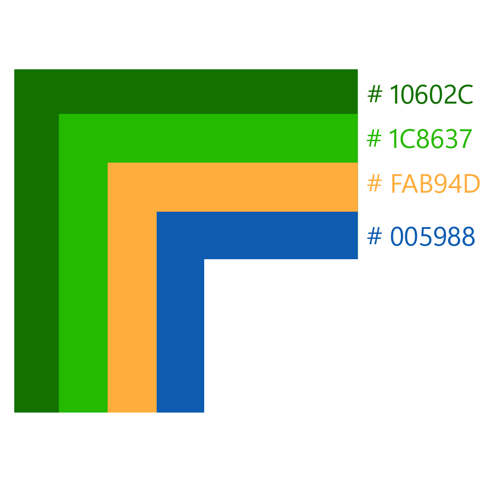
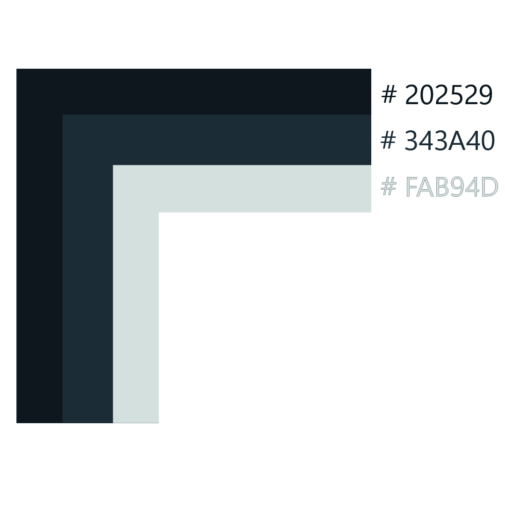
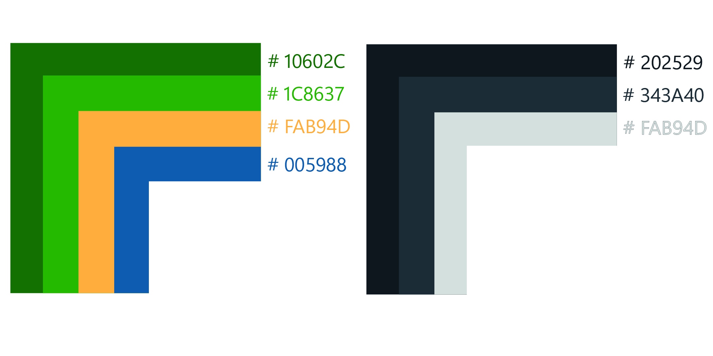
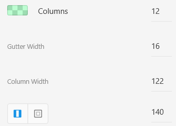
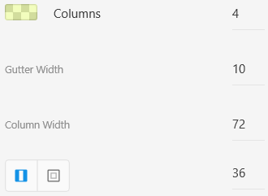
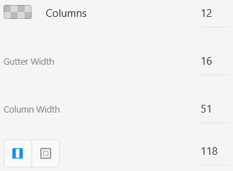
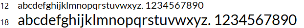

Guia de Estilo
O guia de estilo visual orienta a unidade e a coerência visual na apresentação de uma marca e em sua oferta de serviços no cenário digital.
1. Objetivo
Esse documento tem como objetivo demonstrar os elementos de interfaces, servindo de ponto de partida para garantir um serviço digital consistente, independente do seu alcance, número de páginas ou micro serviços.
Em qualquer situação, o guia de estilo deve ser seguido para que todas as intenções de design criativo sejam corretamente interpretadas e traduzidas para todos que estão trabalhando no desenvolvimento e na entrega de um serviço.
O guia de estilo também tem função de repositório para facilitar o trabalho dos desenvolvedores front-end: quando eles podem utilizar componentes comuns em diversas páginas, sem precisar criar soluções do zero a todo momento, o desenvolvimento adquire bastante velocidade
2. Cores
Esta paleta inclui as cores primárias e secundárias do Exército Brasileiro. As cores base são utilizadas no site para manter a consistência.
2.1 Cores Primárias
As cores primáras se baseam em variações das cores verde, amarelo e azul. As cores seguem a bandeira Brasileira, servido para representar o país.
| Hexadecimal | Nome | Uso |
|---|---|---|
| #10602C | Verde Escuro | Cabeçalho e Rodapé. |
| #1C8637 | Verde Claro | Migalhas de pão. |
| #FAB94D | Amarelo | Detalhes diversos. |
| #005988 | Azul | Detalhes diversos. |

2.2 Cores Secundárias
Estas cores devem ser usadas para textos como parágrafos e títulos. E também usadas para destacar alguma seção da página.
| Hexadecimal | Nome |
|---|---|
| #202529 | Cinza Tubarão |
| #343A40 | Cinza Especial |
| #DADADA | Cinza Alto |

2.3 Contraste
As combinações de cores e contrate devem sergrir a paleta abaixo.

3. Layout
Foram estabelecidas algumas diretrizes para garantir um bom comportamento do site em todos os dispositivos.
3.1 Grids
As grids garantem uma boa organização do conteúdo dentro do site e devem ser respeitadas.
O sistema de grid do projeto utiliza uma série de contêineres, linhas e colunas para fazer o layout e alinhar o conteúdo. Ele é totalmente responsivo. Abaixo está um exemplo e uma análise detalhada de como a grid se junta.
| Distância entre Colunas (Gutters) | Distância entre Linhas (Row) |
|---|---|
| 24px | 24px |

3.2 Grids em dispositívos
A organização criada pelas grids deve ser respeitada em todos os dispositivos, especialmente por ser adaptável a todos eles.
| Dispositívo | Configuração |
|---|---|
| Página Web |  |
| Página Celular |  |
| Página Tablet |  |

4. Tipografia
A Fonte escolhida para o site foi a Titillium Web. E é a família de fonte usada em conteúdos de todo o site. Para títulos, foi escolhida a Lato. Ambas as fontes encontram-se no Google Fontes, garantindo qualidade e velocidade no carregamento.
4.1 Tipografia
Abaixo é possível identificar a fonte (respectivamente, variando de 12px a 72px na fonte Titillium Web).

Para os demais elementos, deve ser utilizada a fonte Lato tamanho 12px ou 18px em caso de texto pequeno, conforme imagem abaixo.

5. Marca
A logo do site representa o Exército Brasileiro, a arte encontram-se abaixo.
Centro de Comunicação Social do Exército - CCOMSEx. 4 de novembro de 2008. Disponível em: http://www.eb.mil.br/documents/10138/71334/Manual+de+Uso+da+Marca+EB/33dd029d-1af4-4bc8-b9ae-716938e3ef73?version=1.2 . Acesso em: 12 de março de 2022.